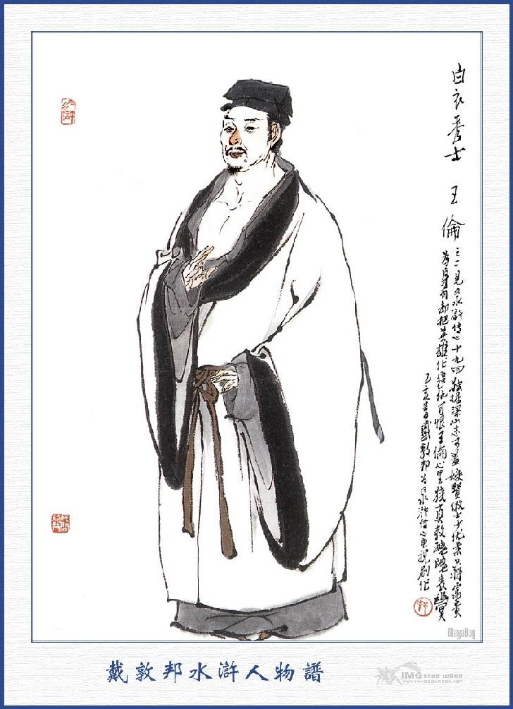
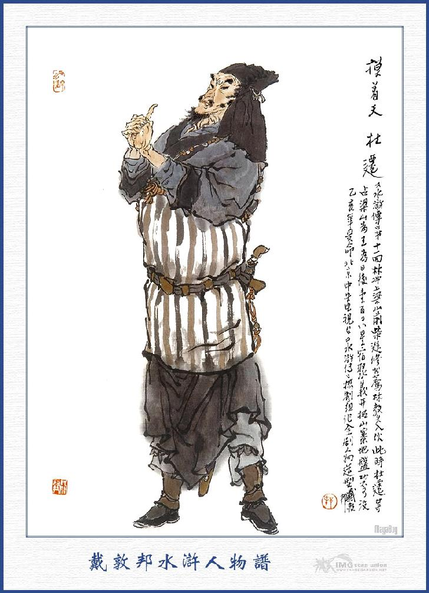
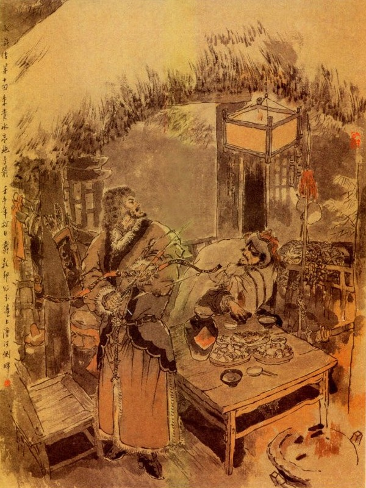
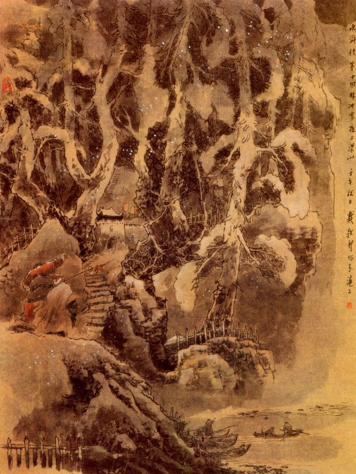

Lũ nhà quê đem Lâm Xung giải đến một nơi trang viện rồi bảo trang khách vào báo với chủ nhân. Bấy giờ chủ nhân còn ngủ chưa dậy, lũ nhà quê bèn đem Lâm Xung đến chỗ bóp gác mà để nằm ở đó. Đến lúc Lâm Xung tỉnh rượu, mở bầng mắt trông ra thấy mình nằm một nơi trang viện rất lớn thì lấy làm lạ quá mà kêu lên rằng:
- Đứa nào mang ta đến đây thế này?
Lũ nhà quê thấy Lâm Xung kêu thì cầm gậy đến mà bảo rằng:
- Liệu hồn, mày còn to mồm nữa kia à?
Bấy giờ có cả lão già bị đốt râu cũng ở đấy, mặt hằm hằm bảo với chúng rằng:
- Nói lôi thôi với nó làm gì, cứ đánh thật lực đi, để chốc nữa quan nhân dậy, sẽ hỏi tội nó.
Nói xong túm vào đánh lấy đánh để làm cho Lâm Xung không thể nào cựa quậy được nữa. Đương khi nguy cấp, khốn đốn thì bỗng thấy một tên trang khách kêu lên rằng:
- Quan nhân đã đến đây kia.
Lâm Xung nghe nói thì lờ mờ nom thấy một vị quan nhân, đương khoanh tay ra sau lưng mà lững thững đi đến rồi hỏi lũ kia:
- Bây đánh ai thế?
Lũ nhà quê bẩm rằng:
- Đêm hôm qua chúng con bắt được thằng ăn cắp này, xin đem đến để nộp ngài.
Vị quan nhân ấy đi gần tới nơi trông thấy Lâm Xung thì ngạc nhiên kinh lạ, vội thét đuổi lũ kia mà tự đến cởi trói cho Lâm Xung rồi hỏi rằng:
- Chết nỗi! Giáo Đầu đi đâu mà bị chúng đem đến đây như thế?
Lũ kia thấy quan nhân xử sự như vậy thì bảo nhau bỏ đấy mà chạy cút, mỗi đứa mỗi nơi. Bấy giờ Lâm Xung mới liếc mặt nom lên thì chính là Tiểu Toàn Phong Sài Tiến ở đó liền nói:
- Đại quan nhân cứu tôi với.
Sài Tiến lại hỏi:
- Tại làm sao mà Giáo Đầu lại đi đến đây để đến nỗi chúng làm như thế được?
- Thưa ngài, chuyện tôi nói ra dài lắm, vậy xin ngài hãy cho vào nhà trong, xin kể ngài nghe.
Nói đoạn, Sài Tiến mời Lâm Xung vào trong nhà, ngồi chơi. Lâm Xung liền đem câu chuyện đầu đuôi, từ khi Lục Ngu Hầu cùng mưu với Quản Doanh, Sai Bát để đốt thảo trường cho đến khi chạy trốn đến đây, thuật rõ cho Sài Tiến nghe. Sài Tiến nghe rõ căn nguyên liền thở dài mà rằng:
- Nếu vậy thì vận quan anh còn bĩ lắm. Nay trời xui khiến lại cho tiểu đệ được gặp quan anh đây thì xin tạm ở với tiểu đệ ít lâu rồi ta sẽ liệu đường tiến thủ.
Nói đoạn sai trang khách lấy áo xiêm sạch sẽ ra cho Lâm Xung thay rồi thiết đãi rượu chè mà cho Lâm Xung ở đó.
Bên kia Quản Doanh dò biết câu chuyện Lâm Xung, liền lập mưu vào báo với Châu Doãn là chính tay Lâm Xung đã giết Sai Bát, Lục Ngu Hầu và Phú An rồi đốt thảo trường mà trốn đi đâu mất. Châu Doãn nghe báo cả kinh, lập tức cho vẽ hình kê tên, treo thưởng 3. 000 quan, để thưởng người bắt được Lâm Xung rồi phái các viên thám tử đi khắp các chốn thành thị thôn quê để dò la tầm nã rất là cấp bách, bấy giờ Lâm Xung ở nhà Sài Tiến được dăm bảy hôm, bỗng nghe tin thì trong lòng nóng nảy băn khoăn mà nói với Sài Tiến rằng:
- Quan nhân có lòng tốt lưu cho tiểu đệ ở đây, thực tiểu đệ lấy lòng vui lắm, song ngặt vì ngày nay quan quân đương hết sức tầm nã, để truy bắt, ngộ vạn nhất họ lần mò dò bắt ở đây thì lại thêm phiền lụy đến quan nhân không tiện, vậy tiểu đệ muốn rằng quan nhân sẽ lấy lòng quảng đại mà giúp cho ít tiền, để tiểu đệ tìm đi nơi khác là hơn, ngày sau trời cho có còn sống được, tiểu đệ xin làm thân trâu ngựa mà đền nghĩa trúc mai.
- Nếu Giáo Đầu có ý e ngại mà không muốn ở đây thì tôi có một phong thư để giới thiệu sang một chỗ kia có được không?
- Ngài có lòng tốt như thế thì còn gì bằng! Nhưng chẳng hay ngài định giới thiệu cho ở đâu?
- Ở Tế Châu thuộc quận Sơn Đông, có một chỗ gọi là Lương Sơn Bạc. Vừng quang rộng hơn 800 dặm, khoảng giữa có thành Uyển Tử và vũng Liên Nhi; Hiện nay có ba người hảo hán là Bạch Y Tú Sĩ Vương Luân làm đầu, Mô Tước Thiên Đỗ Thiên làm thứ hai và Vạn Lý Kim Cương Tống Vạn làm thứ ba, tụ họp có tới bảy tám trăm lâu la ở đấy. Xưa nay thường có những người nặng tội phạm, trốn tránh vào đấy thì họ đều dung nạp cả. Bọn ba người ấy đối xử với tôi cũng hơi có lòng trung hậu, nếu tôi viết thư để quan bác vào đấy thì tất là được ngay, ngài nghĩ sao?
Lâm Xung gật đầu đáp rằng:
- Ngài có lòng tốt như thế còn gì hơn nữa.

VƯƠNG LUÂN

ĐỖ THIÊN
TỐNG VẠN
Sài Tiến lại nói:
- Có một điều hơi khó là hiện nay quan quân truy nã bắt ngặt mà ở chỗ cửa quan con đường đây đi sang châu khác thì lại có hai viên quan canh cửa giữ tra hỏi luôn luôn, như thế thì khó lòng đi cho lọt được.
Sài Tiến nói xong cúi đầu nghĩ một lát mà ngẩng lên mà bảo rằng:
- Được rồi, tôi có kế này, khả dĩ thoát cho quan bác đi được.
Nói đoạn gọi một tên trang khách lên sai mang một gói hành lý đi trước, ra khỏi cửa quan, đi một quãng xa đứng đợi ở đấy rồi la sai mấy chục con ngựa và sắp sửa các đồ cung tên để đi săn. Đoạn rồi bảo Lâm Xung cưỡi lên mình ngựa, cùng đi lẫn vào đám đi săn mà theo Sài Tiến đi ra quan ải. Khi đến cửa quan mấy viên quan coi giữ ở đó, vốn quen biết Sài Tiến đã lâu, liền đứng lên chào hỏi Sài Tiến mà rằng:
- Quan Chầu lại đi săn hôm nay phải không?
Sài Tiến xuống ngựa cúi chào rồi lại hỏi luôn rằng:
- Các ngài có việc chi mà phải canh giữ cẩn thận ở đây?
- Chúng tôi vâng lệnh quan trên Châu Doãn ở đây để tra bắt tên Lâm Xung, phàm các thương khách đi qua đều phải khám hỏi tất cả.
Sài Tiến thấy vậy, liền cười mà bảo rằng:
- Trong bọn tôi cũng có tên Lâm Xung đây, sao các ngài không nhận ra mà bắt lấy. Hai viên quan liền cùng cười mà đáp rằng:
- Ngài là người biết pháp luật, có bao giờ lại làm như thế! Xin các ngài cứ đi đi cho.
Sài Tiến lại cười mà nói rằng:
- Các ngài lại có lòng tin tôi như thế thì hay lắm, để tôi đi săn có được con gì, xin đem đến biếu các ngài.
Nói xong bái biệt mà lên ngựa, dẫn lũ sau cùng đi. Khi ra ngoài cửa quan ước chùng mươi lăm dặm thì đã thấy tên trang khách vác khăn gói đứng đợi ở đấy. Sài Tiến liền bảo Lâm Xung xuống ngựa, thay bộ quần áo đi săn rồi mặc bộ quần áo thường, đội nón dắt dao găm khoác khăn gói, vác thanh đao lớn trên vai, đoạn rồi hai người từ biệt cùng nhau, để Sài Tiến đi săn mà Lâm Xung thì lên đường trốn sang Tế Châu.
Một lời đã biết đến nhau,
Trăm ngàn nguy hiểm dễ hầu tiếc công?
Bâng khuâng lòng những giận lòng,
Nước non biết mẹo anh hùng này chưa
Trời đông tuyết giá, dặm khách thân cô, từ khi bái biệt Sài Đại quan nhân rồi một mình vơ vẩn trên đường, sớm nghỉ tối đi, trong mười mấy ngày trời, rất là buồn bã. Một hôm trời đã chiều hôm, Lâm Xung đi gần đến một khoảng hồ rộng, chợt trông thấy bên cạnh hồ có một hàng rượu thập thò trong ánh tuyết, chàng liền mãi mốt tìm vào để trọ.
Khi vào tới nơi, chàng vừa mới giũ sạch tuyết bám trên áo, bỏ nón và hành lý ra, dựng thanh đao vào một bên, để đặt mình xuống ngồi thì đã thấy một tên tửu bảo chạy đến mà hỏi rằng:
- Ngài xơi rượu phải không?
- Phải, lấy hai nai rượu ra đây?
Tửu bảo vâng lời lấy hai nai rượu ra, Lâm Xung lại hỏi:
- Có gì nhắm không?
Tửu bảo đáp rằng:
- Có thịt bò tươi, thịt bò chín và thịt ngỗng béo gà non, ngài muốn xơi gì?
- Hãy thái hai cân thịt bò chín ra đây.
Tửu bảo chạy vào một lát, mang ra một miếng thịt bò tướng và các thứ rau quả để lên trên bàn rồi rót rượu ra chén. Lâm Xung uống mấy chén rằng rồi đưa mắt trông vào thấy một người, đương khoanh tay đàng lưng, lững thững ở trong đi ra cửa xem tuyết rồi hỏi tửu bảo:
- Người nào uống rượu ở đấy?
Lâm Xung nghe nói lặng yên, ngồi uống luôn mấy chén rượu nữa rồi bảo tên tửu bảo rằng:
- Ngươi đến đây uống một chén với ta cho vui.
Tửu bảo cám ơn, uống một chén rượu rồi, Lâm Xung lại hỏi rằng:
- Từ đây đến Lương Sơn Bạc còn xa hay gần.
- Bẩm, đây đi Lương Sơn Bạc, chỉ còn có dặm đường nữa, nhưng phải đi đường thủy, chứ không có đường bộ. Nếu ngài có muốn đi thì phải dùng thuyền mới được.
- Ngươi có thể tìm cho ta một chiếc thuyền không?
- Bẩm ngài, trời sắp tối mà tuyết xuống ầm ầm thế kia thì tìm đâu được thuyền?
Lâm Xung nói:
- Ta đưa nhiều tiền đây, người cố tìm cho ta một chiếc thuyền để ta đi.
Tửu bảo nhất định từ nan mà rằng:
- Bây giờ thực là không tìm đâu được.
Lâm Xung nghe nói trong bụng lấy làm khó chịu, lại cất rượu uống luôn mấy chén nữa. Bấy giờ một mình nghĩ trông trước trông sau, càng thấy buồn tênh buồn ngắt, đoạn rồi lại nghĩ ngẫm mà tự ân hận rằng: "Khi trước ta ở kính sư làm chức Giáo Đầu, cứ hàng ngày lại đi rong chơi phường phố, chè chén vui cười, biết bao nhiêu là thú vị! Thế mà ai ngờ ngày nay lại bị thằng cọp già Cao Cầu kia nó hãm hại ta làm cho đến nỗi phải chạm dấu vào mặt, đày ải phương xa rồi lại lênh đênh đến tận chốn này, khiến cho ta có nước không được về, có nhà không được ở, đem ngày những âm thầm mà chứa chất kể biết bao cay đắng, thế thì có đáng giận hay không?” Nghĩ đoạn liền gọi tửu bảo mượn bút với nghiêng rồi nhân khi tửu hứng, giơ lên vách vôi mà viết tám câu thơ rằng:
Khẳng khái thay! Lâm Xung,
Trung nghĩa dốc một lòng
Giang hồ từng nổi tiếng,
Thiên hạ khét anh hùng.
Thân thế thường chìm nổi.
Công danh ngán bấp bông!
Ngàn sau như thoả chí,
Lừng lẫy Thái Sơn Đông.
Viết xong vất bút xuống rồi lại ngồi uống rượu ngẫm nghĩ một mình. Chợt đâu thấy người xem tuyết lúc nãy chạy vào, cầm cánh tay Lâm Xung mà nói rằng:
- Bác này to gan thực! Bác ở Thương Châu làm ra những tội tày đình, hiện quan tư còn đương thưởng tiền để bắt, thế mà lại dám đến đây à?
Lâm Xung quay lại hỏi rằng:
- Bác biết tôi là ai?
- Bác là Báo Tử Đầu Lâm Xung chứ ai!
Lâm Xung tảng lờ đáp rằng:
- Không phải tôi là họ Trương kia mà.
Người kia cười mà rằng:
- Thôi, bác đừng nói lòe tôi nữa, tên bác vừa mới viết trên vách, hãy còn kim ấn đây kia, bác chối sao được.
Lâm Xung biết thế không thể chối được, liền hỏi:
- Anh bắt tôi hay sao?
Người kia lại cười mà đáp:
- Tôi bắt bác để làm gì, bác hãy tôi theo vào trong Thủy Đình này, ngồi chơi rồi sẽ nói chuyện.
Nói xong lại gọi tửu bảo thắp đèn trong Thủy Đình rồi mời Lâm Xung vào cùng ngồi mà nói rằng:
- Vừa rồi tôi thấy quan bác muốn thuê thuyền đi vào Lương Sơn Bạc, nhưng ở đấy là một cái trại của đám cường hào, quan bác định đến để làm gì?
- Không dấu gì bác, tôi bây giờ bị quan trên truy riết, không trốn vào đâu được, cho nên tôi phải vào đấy mà nhập bọn với họ cho xong.
- Đành vậy, nhưng tất là có ai tiến cử cho bác đây hẳn?
- Có người bạn cũ của tôi ở quân Hoàng Hải, thuộc về Thương Châu tiến cử cho tôi đến đó.
- Có phải là ông Tiểu Toàn Phong Sài Tiến chăng?
- Sao ngài lại biết ông ấy?
- Nguyên ông ấy với các Đại Vương ở trong trại cũng chơi thân với nhau, thỉnh thoảng lại có thư từ đi lại luôn luôn, ngày trước khi Vương Luân mới thi hỏng về, có cùng với ông Đỗ Thiên đến ở nhà ông Sài Tiến được ít lâu rồi đến lúc đứng dậy ra đi, ông ấy lại tặng đãi tiền nong tử tế.
Lâm Xung nghe nói đến đó, đoán chắc rằng người kia cũng là một bọn ở Lương Sơn, liền hỏi bằng cách lễ phép rằng:
- Thưa ngài tôi thực là có mắt mà không trông thấy Thái Sơn xin ngài tha lỗi mà cho biết đại danh là gì?
Người kia vội đáp lễ mà rằng:
- Thưa ngài, tôi là thủ túc của Vương Đầu Lĩnh, tên là Chu Quý, nguyên người ở phủ Nghi Châu, huyện Nghi Thủy, đám giang hồ thường gọi tôi là Hãn Địa Hốt Luật xưa nay. Nay trong sơn trại cắt tôi ra giả danh mở một ngôi hàng ở đây, chỉ cốt để thám thính những kẻ qua người lại, ai có tiền của thì lên báo với sơn trại mà ai côi cút không có gì thì để mặc cho đi, kẻ nào có của cải đến đây, nhẹ ra thì cho uống thuốc mê mà nặng ra thì tất phải kết liễu tính mạng rồi thái thịt phơi khô mà lấy mỡ đốt đèn ngay lập tức. Vừa rồi vì thấy ngài hỏi thăm đường vào Lương Sơn Bạc, cho nên không dám hạ thủ, sau thấy ngài viết tên lên vách, bấy giờ tôi mới biết ngài là bậc anh hùng có tiếng đã lâu cũng may mà tôi được gặp ở đây, thực là vạn phúc. Vả chăng lại có Sài Đại Quan Nhân tiến cử thì ngài tới nơi, tất là được trọng dụng chớ chẳng chơi.
Nói xong sai tửu bảo lại dọn rượu thiết đãi Lâm Xung. Hai người cùng ngồi ở Thủy Đình uống rượu hồi lâu rồi Lâm Xung hỏi Chu Quý rằng:
- Bây giờ làm sao có thuyền mà đi vào Lương Sơn Bạc được?
- Ngài cứ nghỉ ngơi đây một tối rồi sáng mai khắc có thuyền để tôi cùng đi với.
Đoạn rồi hai người cùng đi nghỉ. Sáng hôm sau vào khoảng trống canh năm, Chu Quý đã gọi Lâm Xung dậy, súc miệng rửa mặt rồi cùng nhau uống dăm ba chén rượu, ăn qua loa một chút điểm tâm. Lúc bấy giờ trời còn lờ mờ chưa sáng thực, Chu Quý đi ra Thủy Đình, mở cánh cửa rồi lấy một cái cung, đặt tên nhắm vào thẳng một đám lau lách ở trong bến nước mà bắn ra một phát. Lâm Xung thấy vậy, hỏi Chu Quý rằng:
- Bắn như thế là ý gì?
- Đó là hiệu tên của sơn trại ở đây, bắn thế một lát có thuyền bây giờ.

Được một lát, quả nhiên có năm bảy tên lâu la nhỏ, chèo một cái thuyền đến bên cạnh Thủy Đình, Chu Quý liền vẫy Lâm Xung mang các đồ đao trượng hành lý mà xuống thuyền. Thuyền chèo vào vũng Kim Sơn mà đi đến bến, Chu Quý cùng Lâm Xung bước lên trên bờ để mấy đứa tiểu lâu la, đeo khăn gói vác đao trượng đi theo sau lên sơn trại, còn mấy đứa tiểu lâu la, chèo thuyền tấp về một chỗ. Lâm Xung lên đến bờ, nom hai bên toàn thị cây lớn đẫy ôm rồi thấy một tòa Đoạn Kim Đình ở ngay lưng chừng núi. Đi một lát nữa đến một tòa cổng lớn, mặt trước bày dàn các đồ gươm giáo cung nỏ mác phạng roi, toàn xếp những gỗ súc đá đạn rất là oai vệ. Hai bên lối đi dàn các hiệu cờ đội ngũ rồi lại đi qua hai lần cổng nữa, mới tới cửa trại. Bấy giờ Lâm Xung nhìn khắp bốn mặt non cao, ba tòa cửa rộng, lại có miếng đất phẳng lỳ như mặt kính, chu vi chừng ba bốn trăm trượng. Ở giữa, ngay giữa chỗ khe núi vào là tòa cửa chính còn hai cái phòng xép ở ra hai bên, Chu Quý đưa Lâm Xung đi qua cửa vào đến Tụ Nghĩa Sảnh, thấy khoảng giữa kê một cái ghế chéo, Bạch Y Tú Sĩ Vương Luân ngồi đấy. Bên tả cũng một cái ghế chéo, Mô Tước Thiên Đỗ Thiên ngồi, còn bên hữu một cái ghế nhỏ, Vận Lý Kim Cương Tống Vạn ngồi. Chu Quý đưa Lâm Xung đến trước mặt chào ba người rồi Lâm Xung đứng bên cạnh Chu Quý. Chu Quý nói với ba người kia rằng:
- Ông này là ông Lâm Xung làm chức Giáo Đầu dạy 80 vạn Cấm Quân ở bên Đông Kinh, tên hiệu Báo Tử Đầu Lâm Xung vì Cao Thái Úy hãm hại, phải đi đày sang Thương Châu rồi lại bị người lập kế đốt mất thảo trường, cho nên bất đắc dĩ phải giết chết ba người mà đi trốn vào nhà ông Sài Tiến. Nay ông Sài Tiến có đưa thư tiến cử để nhập đảng vào đây, xin trình để chư huynh biết.
Lâm Xung thấy Chu Quý nói liền lấy thư đưa ra, Vương Luân cầm lấy thư bóc xem rồi, mời Lâm Xung ngồi vào ghế thứ tư, còn Chu Quý thì ngồi vào ghế thứ năm. Nhất diện lại sai tiểu lâu la đem rượu lên rót ba tuần rồi mới hỏi thăm đến chuyện Sài Đại quan nhân. Lâm Xung thấy hỏi đáp rằng:
- Sài Đại quan nhân chỉ ngày ngày đi ra ngoài nội săn bắn làm vui, không có việc chi là lạ.
Vương Luân hỏi han hồi lâu rồi tự nghĩ một mình rằng:
- Mình là một anh học trò thi hỏng, chỉ vì bực chí mà dắt Đỗ Thiên lên đây lạc thảo rồi sau mới có Tống Vạn đem được ít binh mã mà tụ họp thêm vào. Nhưng khốn vì mình đây võ nghệ cũng chẳng biết gì mà Đỗ Thiên, Tống Vạn thì cũng loàng nhoàng chẳng được bằng ai, vậy mà lại rước một anh này đến đây, trước anh ta đã làm chức Giáo Đầu, tất cao cường võ nghệ, ngộ sau này biết thóp mà tranh chiếm chúng mình thì cự địch làm sao cho nổi? Âu là ta chối phắt cho hắn đi chỗ khác là hơn. Như thế thì cũng có điều hơi ngại với Sài Đại quan nhân mà mang tiếng là thằng bội bạc, song cũng không thể nào mà dung được hắn ở đây.
Nghĩ đoạn liền sai đặt tiệc để thết đãi Lâm Xung cùng các bạn hảo hán trên trại. Khi ăn tiệc xong, Vương Luân sai tiểu lâu la lấy một cái mâm 50 lạng bạc và cây lụa lên rồi đứng dậy mà nói với Lâm Xung rằng:
- Không mấy khi Sài Đại quan nhân lại giới thiệu cho Giáo Đầu đến tiểu trại chúng tôi, để vào đảng, thực chúng tôi lấy làm may mắn. Song hiềm vì chúng tôi ở đây trại nhỏ, lương ít, nhà cửa chật hẹp, sức vóc yếu đuối, sợ sau này lại lỡ mất đường tiến thủ của ngài. Vậy nay gọi có chút lễ mọn xin ngài chấp nhận lấy và ngài liệu đi tìm chỗ khác mà lập chí thì có lẽ tiện hơn. Xin ngài chớ lấy làm lạ mà ngờ bụng chúng tôi.
Lâm Xung nghe nói liền từ chối mà rằng:
- Chúng tôi nghìn dặm tìm danh nhân, muôn dặm tìm minh chủ, nay nhờ được Sài Đại quan nhân tiến cử đến đây, để cùng các ngài theo đuổi, vậy chúng tôi tuy tài hèn mọn cũng xin hết sức bình sinh, không có điều chi siểm nịnh, dám xin các ngài rộng lòng cho ở lại đây. Chúng tôi thực không phải là cốt đến đây để lấy tiền tặng của các ngài, xin Đầu Lĩnh xét cho.
- Hãy hay rằng vậy, nhưng ở đây nhỏ hẹp thế này, để ngài ở làm sao được. Ngài chớ nghĩ chúng tôi có bụng gì đâu.
Chu Quý nghe Vương Luân nói liền can rằng:
- Dám thưa Ca Ca tôi nói câu này, xin Ca Ca thứ lỗi cho, trong trại ta đây lương thực tuy ít cũng có thể lấy thêm được ở các nơi, nhà cửa tuy không chỉnh đốn cũng có thể lấy gỗ lạt trong rừng mà làm thêm được. Vậy thì Sài Đại quan nhân đã tiến cử Lâm Giáo Đầu sang đây, có lẽ lại để người đi đâu cho tiện? Vả lại Sài Đại quan nhân trước đã có ơn với sơn trại ta đây, nay nếu làm như vậy mà quan nhân biết ra tất là mang tiếng không hay. Huống chi Lâm Giáo Đầu lại là một người giỏi về võ nghệ, ở đây hẳn cũng làm được việc hay, vậy có điều chi mà ngại?
Đỗ Thiên cũng nói rằng:
- Trong sơn trại ta hẹp gì một người mà không thu lưu được! Nếu Ca Ca làm thế, e khi Sài Đại quan nhân biết đến thì tất là đeo điều bội nghĩa vong ân. Phương chi ngày trước ta nhờ vả cũng nhiều, thế mà ngày nay tiến cử một người đến đây mà ta lại thoái thác không nhận thì nghe sao cho xuôi?
Tống Vạn cũng khuyên Vương Luân rằng:
- Ta nên nể lòng Sài Đại quan nhân mà lưu Lâm Giáo Đầu làm chức Đầu Lĩnh ở đây là phải, nếu không thì bọn giang hồ người ta tất nhiên cười ta là lũ vô nghĩa không ra gì.
Bấy giờ Vương Luân quay ra bảo các người cùng đảng rằng:
- Anh em không biết, người ta ở Thương Châu, đã gây ra những tội tầy trời, nay lại lên sơn trại ta đây, ngộ nhỡ ra không phải là người tâm phúc mà định đến để dò xét thực hư thì ta làm thế nào?
Lâm Xung nói:
- Tôi vì phạm tử tội, trốn tránh đến đây một mình, còn có điều chi mà các ngài lấy làm ngờ nữa.
Vương Luân nói:
- Nếu quả thực là có lòng vào đảng với chúng tôi thì xin nộp một đầu danh trạng để làm tin.
- Vâng, chúng tôi cũng biết vọc vạch được dăm ba chữ, xin cho đem giấy bút đây, để tôi viết đầu danh trạng.
Chu Quý nghe nói cười bảo Lâm Xung rằng:
- Không phải thế, Lâm Giáo Đầu ơi! Phàm đám hảo hán muốn nhập bọn với nhau, tất phải có đầu danh trạng, đầu danh trạng này là xuống núi giết được một người mà lấy thủ cấp lên đây, cho mọi người đều tin theo bụng mình, chứ có phải là giấy đầu danh đâu?
Lâm Xung nói:
- Cái đó thì cũng dễ, để tôi xuống núi, xem có ai là tôi làm được ngay, nhưng chỉ sợ không có ai đi qua lại thì làm thế nào?
Vương Luân ra lệnh rằng:
- Tôi hẹn cho ông trong ba ngày, nếu có đầu danh trạng thì xin lưu lại ở đây, bằng không thì ông đừng trách chúng tôi nữa.
Lâm Xung cúi đầu vâng lời. Đêm hôm ấy chè chén, xong rồi, Chu Quý lại trở về tửu điếm, còn Lâm Xung thì đem các đồ hành lý đao trượng mà đến ngủ ở phòng khách.
Sáng hôm sau Lâm Xung dậy cơm nước xong rồi gọi một tên lâu la chở thuyền đưa ra ngoài núi, đến một chỗ đường con vắng vẻ để đợi khách qua lại mà lấy đầu danh trạng. Đợi suốt từ sáng đến tối, không có một người nào qua lại ở đó, Lâm Xung lấy làm buồn bã, lại phải cùng tiểu lâu la mà cùng trở về sơn trại. Khi về tới trại, Vương Luân hỏi rằng:
- Đầu danh trạng ở đâu?
Lâm Xung đáp:
- Ngày hôm nay không có một ai qua lại, cho nên chưa làm sao lấy được.
- Nếu ngày mai không có nữa thì khó lòng mà ở đây được.

Lâm Xung nghe vậy thì không dám nói gì, song trong lòng hơi buồn bực không vui. Sáng hôm sau cơm nước xong, lại cùng tên tiểu lâu la xuống núi, tiểu lâu la lại đưa Lâm Xung sang mạn núi bên nam, nấp ở trong rừng, đợi suốt từ sáng đến trưa cũng không thấy một ai cả. Mãi sau có bọn tới 300 người, liền lũ với nhau qua đó, Lâm Xung thấy vậy, đành giương mắt nhìn họ đi mà không dám hạ thủ. Đoạn rồi lại rình mãi đến tối cũng không có một người nào đi qua nữa. Lâm Xung lấy làm bực dọc, bảo với tiểu lâu la rằng:
- Vận ta đen quá, đến nỗi hai ngày hôm nay không có một mống nào, đi lẻ loi ở đây cả, như thế biết làm sao bây giờ?
Tiểu lâu la nói:
- Ngài hãy cứ khoan tâm, còn một ngày mai nữa, tôi xin đưa ngài sang mạn núi bên đông kia thì may ra có thể kiếm được.
Nói đoạn cùng trở về sơn trại. Khi về tới nơi, Vương Luân lại nói rằng:
- Hôm nay thế nào, đầu danh trạng đâu?
Lâm Xung chỉ biết thở dài mà không biết trả lời làm sao được. Vương Luân lại cười mà bảo rằng:
- Ngày nay lại không có rồi! Thôi tôi hẹn ba ngày mà nay đã hết hai rồi, còn một ngày mai nữa, nếu không có thì xin ngài cứ đi đâu cho, chứ không nên gặp nhau nữa.
Lâm Xung nghe thấy vậy thì trong lòng lấy làm phiền não, chỉ trông trời mà than thở một mình. Hết một đêm hôm ấy, lại đến sáng hôm sau, Lâm Xung lại ăn qua loa một ít cơm rồi sắp cả khăn gói vào lưng và vác cây thanh đao lớn, cùng với tiểu lâu la đi xuống phía núi bên đông để đón.
Khi tới sườn núi, đứng nấp ở bên trong khu rừng, ước từ sáng đến trưa, tịch không một ai qua lại. Bấy giờ gặp buổi tuyết tàn mới tạnh, bóng ác sáng soi, Lâm Xung bảo với tiểu lâu la:
- Vận ta thế này đen thực, còn mặt mũi nào trở lại sơn trại nữa. Vậy bất nhược ngay bây giờ mặt trời chưa tối, ta tiện đây thu lấy hành lý mà đi tìm nơi khác là hơn!
Vừa nói dứt lời thì thấy tên tiểu lâu la trỏ tay ra mà bảo rằng:
- Kia kìa! Có phải có một người đi đến kia không?
Lâm Xung quay ra nom thì quả nhiên có một người đang lừ lừ ở góc núi đàng xa đi đến, chàng liền thở dài một tiếng, ra dáng bất đắc dĩ trong lòng rồi vác đao nhảy xổ ra. Người đi đường trông thấy Lâm Xung nhảy ra thì kêu một tiếng rồi vất gánh xuống đường mà vùng chạy tháo thân? Lâm Xung vội vàng đuổi theo đến chỗ góc núi thì anh kia chạy ngoắt đi đâu mất không sao bắt được. Bấy giờ Lâm Xung quay lại bảo với tên lâu la rằng:
- Ngươi xem vậy ta thế có ngán không? Đợi ba ngày mới gặp một người thì nó lại chạy mất, còn làm thế nào được nữa?
Tiểu lâu la nói:
- Không hề chi ngài dẫu không giết được người, nhưng đã có gánh lụa đây cũng có thể thay vào được.
- Nếu thế thì ngươi gánh về trại trước, để ta đứng đây đợi lúc nữa xem sao?
Tiểu lâu la vâng lời, gánh gánh lụa đi về trại trước. Chợt đâu lại có một người to lớn vác một thanh đao ở đâu lù lù đến, Lâm Xung đã mừng thầm trong bụng: "Chắc là trời giúp cho ta phen này hẳn?" Vừa nghĩ vậy thì người kia cầm thanh đao đi đến, quát lên như sấm vang rằng:
- Đồ ăn cướp kia, muốn sống thì đem trả hành lý của ta. Chính ta đương muốn bắt chúng bây, nay chúng bây lại còn muốn nhổ râu hùm nữa sao?
Nói đoạn giơ đao nhảy sấn vào mà đánh Lâm Xung, mới hay:
Già gan mới biết gan già,
Giang hồ vùng vẫy ai mà kém ai?
Tuốt gươm đứng dậy hỏi trời:
Nam nhi này chịu thua thời được sao
Không gan ai gọi anh hào,
Không lên, ai biết non cao mấy trùng
Dấn thân trong đám bụi hồng
Một liều bảy, tám, chín lung lung ta quyết liều.
Lời bàn của Thánh Thán
Toàn Phong là gió dữ, sức nó quay tròn từ đất nổi lên, mới đầu thì những bụi than hợp lai, dần dần làm cho đá chạy cát bay, khiến trời đất tối tăm, người vật đều kinh khiếp, mới gọi là toàn, tức cơn gió Lốc, ý nói gió Lốc vơ những thứ ác dơ bẩn, quét đi một nơi như thế vậy. Bến nước có một số người cũng từ Lâm Xung tới vậy. Mà việc Lâm Xung về Bến Nước thì ra sức của Sài Tiến làm nên. Xét tên của Sài Tiến gọi là Toàn Phong thì thấy lời kia dữ lắm, thế mà lại cho làm Tiểu (Toàn Phong) là sao? Ví Sài Tiến đối với đám người Bến Nước cũng ví như một cánh bèo rồi đến Lý Quỳ cũng vào Bến Nước, khiến trên dưới phân ngôi làm cho nhật nguyệt đôi vầng không sáng láng, cho nên lấy làm dữ dội những cơn gió mà gọi là Hắc Toàn Phong (tên Lý Quỳ) nay một kẻ kia là Hắc thì Sài Tiến lại là Tiểu vậy, mới gọi Sài Tiến làm Tiểu Toàn Phong.
Hồi này một nửa về trước, chỉ bình thường không lạ, song chép việc cũng đơn giản đủ ý, đến nửa hồi sau, tả Lâm võ sư uống rượu trong hàng nét bút như quỷ lạ, tự đầu muốn lại vồ người, dẫu ngồi trong lầu gác đọc qua cũng không thể chẳng vỗ bàn mà kêu khóc vậy. Tiếp tay tả Vương Luân ghen ghét, đó cũng là thói quen của lũ ấy, chẳng nói làm chi, chỉ duy chỗ ba ngày sang sông, mỗi ngày một tả khác, văn bút như vậy cũng thấy ly kỳ! Rất kỳ là ngày thứ nhất không thấy bóng người qua; Ngày thứ nhì có đám 300 người qua làm không đám động tay; Ngày thứ ba sao thấy một người, lại bị chạy mất, phải đợi đến lần thứ hai, mới nảy ra một tay đại hán, đều là những đoạn văn kỳ ảo đặc biệt, không thể bỏ qua. Trong văn có từng chỗ tả tuyết, khéo điểm xuyết ly kỳ. Ta đọc trong đoạn văn ngày thứ ba, đến chỗ đánh cướp lấy gánh hàng, với câu trời còn chưa tối, thấy rằng Nại Am là một bậc tài tử chính đáng, độc giả đời sau, xem nên lưu ý, cho rõ lối hành văn.